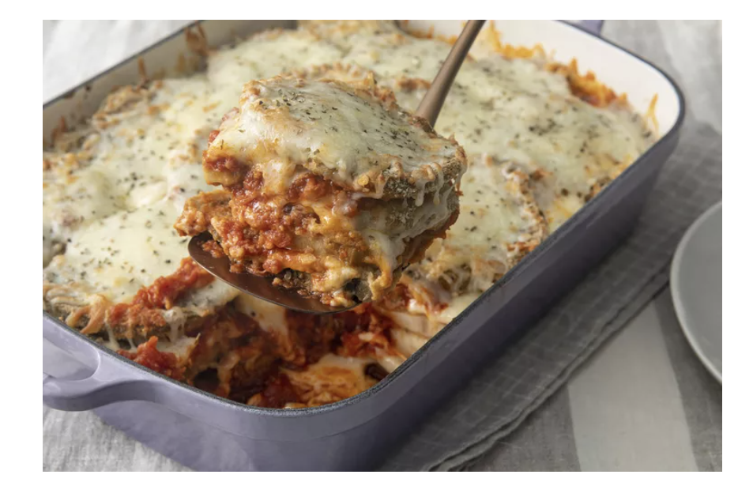

Eggplant Parmersian Recipe

Ingredients Needed
- 3 Large Eggplants
- 2 Large Eggs
- 4 cups of Italian Breadcrumbs
- 6 cups of spaghetti sauce
- 16 ounces mozzarella cheese
- 1/2 cup of parmesian cheese
- 1/2 teaspoon of dried basil
Cooking Instructions
- Preheat the oven to 350F
- Dip the eggplant slices into eggwash and then into bread crumbs. Then place the eggplant on sheet
- Bake in the preheated oven for 5 minutes then flip it over and bake for another 5 minutes
- Spread spaghetti sauce all over the bottom of the tray
- Place a layer of eggplants on top of the sauce
- Sprinkle both parmesian and mozzarella cheese on top of the eggplant
- Repeat the last 3 steps until you fully reach the top of the tray
- Sprinkle some dry Oregano on top
- Place the try in the 350F oven for 35 minutes